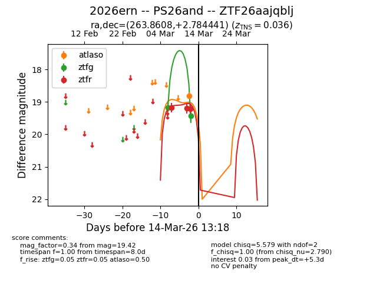
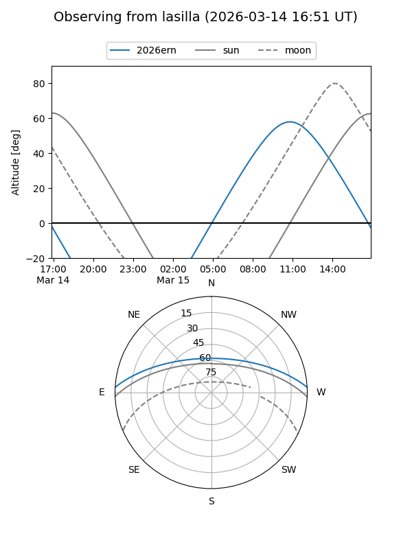
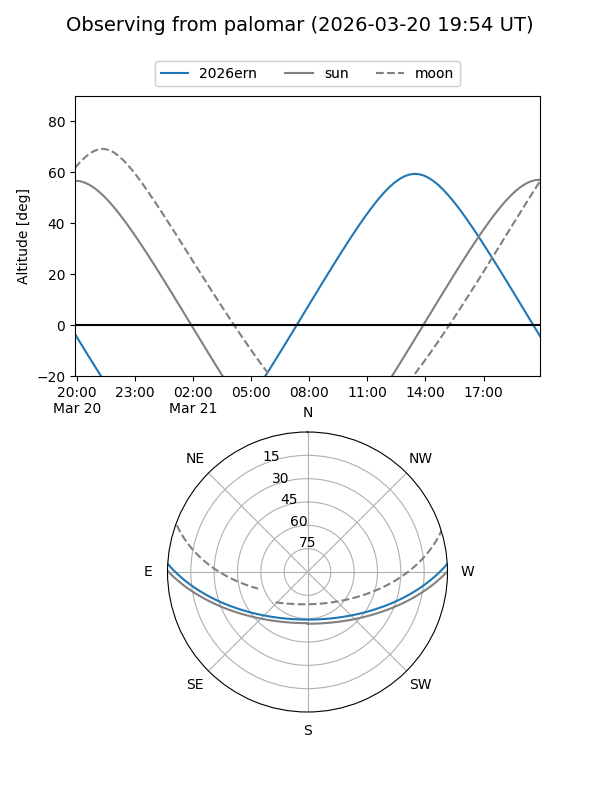
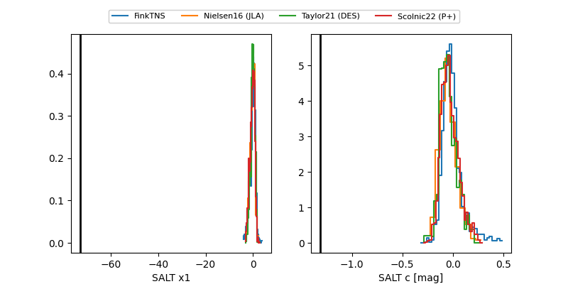

2026ern
Target 2026ern at 2026-03-14 13:19
Aliases and brokers:
FINK: link
Lasair: link
ALeRCE: link
TNS: link
YSE: link
alt names
ZTF26aajqblj (ztf,fink_ztf)
2026ern (tns,yse)
PS26and (panstarrs)
Coordinates:
equatorial (ra, dec) = 263.8608,+2.78444
equatorial (HMS+DMS) = 17:35:26.59,+02:47:03.99
galactic (l, b) = (26.5857,+18.15216)
Flags:
Photometry:
last atlaso=18.81, ztfg=19.42, ztfr=19.21
1 atlaso, 2 ztfg, 3 ztfr detections
Lightcurve

Visibility


Additional plots
